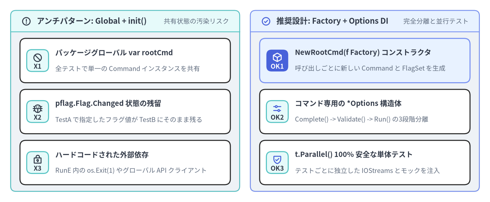
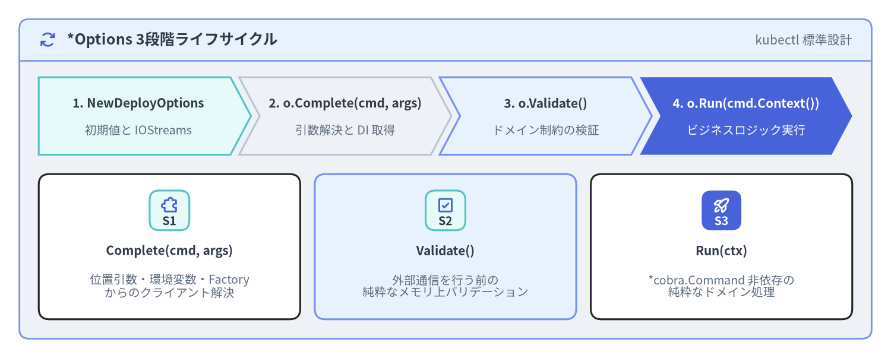

ファクトリ関数・Options 構造体・DI パターン
多くの入門記事や旧来の cobra-cli スキャフォールドツールでは、コマンドをパッケージレベルのグローバル変数（var rootCmd = &cobra.Command{...}）として宣言し、func init() 内でフラグ登録や親子接続を行います。しかし、この書き方は テスト間の状態汚染（pflag.Flag.Changed の残留）、t.Parallel() 実行時のデータ競合（Data Race）、モック注入（DI）の困難さ を引き起こす最大のアンチパターンです。本ページでは、Kubernetes（kubectl）、GitHub CLI（gh）、Helm、Docker CLI などの大規模プロダクションで標準採用されている ファクトリ関数（NewCmd*）、3段階 *Options 構造体（Complete -> Validate -> Run）、および 依存性注入（DI）パターン を解説します。

Source Code
from drawlib.canvas import save, setup
from drawlib.icons import phosphor
from drawlib.smartarts import CardList, Panel
from drawlib.styles import Styles
setup(width=184, height=76, dpi=150)
left_panel = Panel(
"アンチパターン: Global + init()",
"共有状態の汚染リスク",
style=Styles.Neutral.patch(shape_r=2.0),
header_style=Styles.SecondaryNeutral.patch(shape_line_width=1.2),
text_style=Styles.DarkBold.patch(text_size=11.5),
description_style=Styles.Muted.patch(text_size=9.5),
icon=phosphor.warning_circle,
icon_style=Styles.DarkBold,
header_variant="filled",
header_height=8.0,
)
left_panel.draw((4.0, 4.0), width=86.0, height=68.0)
l_xy, l_w, l_h = left_panel.get_content_box((4.0, 4.0), width=86.0, height=68.0, padding=(3.5, 2.5))
bad_list = CardList(
style=Styles.White,
text_style=Styles.DarkBold.patch(text_size=10.5),
description_style=Styles.Muted.patch(text_size=9.5),
badge_shape="rounded_rect",
badge_style=Styles.SecondaryNeutral,
badge_text_style=Styles.DarkBold.patch(text_size=9.5),
icon_style=Styles.DarkBold,
direction="vertical",
spacing=2.5,
)
bad_list.add(
"パッケージグローバル var rootCmd",
"全テストで単一の Command インスタンスを共有",
badge_text="X1",
icon=phosphor.prohibit,
)
bad_list.add(
"pflag.Flag.Changed 状態の残留",
"TestA で指定したフラグ値が TestB にそのまま残る",
badge_text="X2",
icon=phosphor.bug,
)
bad_list.add(
"ハードコードされた外部依存",
"RunE 内の os.Exit(1) やグローバル API クライアント",
badge_text="X3",
icon=phosphor.lock_key,
)
bad_list.draw(l_xy, width=l_w, height=l_h)
right_panel = Panel(
"推奨設計: Factory + Options DI",
"完全分離と並行テスト",
style=Styles.Neutral.patch(shape_r=2.0),
header_style=Styles.PrimaryNeutral.patch(shape_line_width=1.2),
text_style=Styles.DarkBold.patch(text_size=11.5),
description_style=Styles.Muted.patch(text_size=9.5),
icon=phosphor.check_circle,
icon_style=Styles.PrimaryBold,
header_variant="filled",
header_height=8.0,
)
right_panel.draw((94.0, 4.0), width=86.0, height=68.0)
r_xy, r_w, r_h = right_panel.get_content_box((94.0, 4.0), width=86.0, height=68.0, padding=(3.5, 2.5))
good_list = CardList(
style=Styles.White,
text_style=Styles.DarkBold.patch(text_size=10.5),
description_style=Styles.Muted.patch(text_size=9.5),
badge_shape="rounded_rect",
badge_style=Styles.SecondaryNeutral,
badge_text_style=Styles.DarkBold.patch(text_size=9.5),
icon_style=Styles.PrimaryBold,
direction="vertical",
spacing=2.5,
)
good_list.add(
"NewRootCmd(f Factory) コンストラクタ",
"呼び出しごとに新しい Command と FlagSet を生成",
badge_text="OK1",
icon=phosphor.cube,
style=Styles.PrimaryNeutral,
badge_style=Styles.PrimaryFlat,
badge_text_style=Styles.WhiteBold.patch(text_size=9.5),
icon_style=Styles.WhiteBold,
)
good_list.add(
"コマンド専用の *Options 構造体",
"Complete() -> Validate() -> Run() の3段階分離",
badge_text="OK2",
icon=phosphor.sliders_horizontal,
)
good_list.add(
"t.Parallel() 100% 安全な単体テスト",
"テストごとに独立した IOStreams とモックを注入",
badge_text="OK3",
icon=phosphor.shield_check,
)
good_list.draw(r_xy, width=r_w, height=r_h)
save()
1. なぜグローバル変数 var rootCmd + init() は大規模開発で破綻するのか
以下のようにパッケージスコープの変数と func init() を使った典型的なアンチパターンを見てみましょう。
// アンチパターン: 本番 CLI でパッケージグローバルな Command やフラグ変数を使ってはいけない！
var (
replicas int
dryRun bool
deployCmd = &cobra.Command{
Use: "deploy",
RunE: func(cmd *cobra.Command, args []string) error {
// パッケージグローバル変数を直接参照・変更している！
return runDeploy(replicas, dryRun)
},
}
)
func init() {
deployCmd.Flags().IntVar(&replicas, "replicas", 1, "レプリカ数")
deployCmd.Flags().BoolVar(&dryRun, "dry-run", false, "ドライラン実行")
rootCmd.AddCommand(deployCmd)
}
このコードに対して単体テストを書くと、直ちに3つの深刻な問題に直面します。
- テストケース間でのフラグ状態の残留（Sticky Flag State）:
- テスト1で
rootCmd.SetArgs([]string{"deploy", "--dry-run", "--replicas=5"})を実行すると、グローバル変数dryRun = true、replicas = 5に書き換わり、pflag.FlagのChangedフィールドもtrueになります。 - 続くテスト2で
rootCmd.SetArgs([]string{"deploy"})（フラグ指定なし）を実行すると、pflagは 引数で指定されなかったフラグの値をデフォルト値へリセットしない ため、テスト1のdryRun == trueとreplicas == 5がそのままテスト2へ漏洩します。
- テスト1で
t.Parallel()によるデータ競合（Data Race）:Command.args、Command.flags、Command.outWriter、およびフラグバインド変数がすべて単一のメモリ領域を共有するため、t.Parallel()で複数テストを並行実行するとgo test -raceが即座に競合エラーを検出します。
import時の暗黙的副作用:- パッケージを
importしただけで全ファイルのinit()が自動実行されるため、テスト時に一部のサブコマンドだけを切り出したり、初期化前にモックを注入したりすることができません。
- パッケージを
2. 3段階 *Options 構造体パターン（Complete・Validate・Run）
Cobra の CLI 解析処理とドメインのビジネスロジックを綺麗に分離するため、各コマンドに専用の <Command>Options 構造体 と New<Command>Cmd コンストラクタ関数 を用意します。
Kubernetes の kubectl（k8s.io/cli-runtime）が確立したベストプラクティスでは、*Options 構造体に Complete()・Validate()・Run() の3つのメソッドを実装し、RunE の中で順番に呼び出します。

Source Code
from drawlib.canvas import save, setup
from drawlib.icons import phosphor
from drawlib.smartarts import CardList, ChevronProcess, Panel
from drawlib.styles import Styles
setup(width=184, height=74, dpi=150)
outer = Panel(
"*Options 3段階ライフサイクル",
"kubectl 標準設計",
style=Styles.Neutral.patch(shape_r=2.0),
header_style=Styles.PrimaryNeutral.patch(shape_line_width=1.2),
text_style=Styles.DarkBold.patch(text_size=12.0),
description_style=Styles.Muted.patch(text_size=10.0),
icon=phosphor.arrows_clockwise,
icon_style=Styles.PrimaryBold,
header_variant="filled",
header_height=8.5,
)
outer.draw((4.0, 4.0), width=176.0, height=66.0)
proc = ChevronProcess(
style=Styles.White,
text_style=Styles.DarkBold.patch(text_size=10.0),
description_style=Styles.Muted.patch(text_size=9.5),
corner_angle=62.0,
spacing=1.8,
flat_left_end=True,
)
proc.add("1. NewDeployOptions", description="初期値と IOStreams", style=Styles.SecondaryNeutral)
proc.add("2. o.Complete(cmd, args)", description="引数解決と DI 取得", style=Styles.Neutral)
proc.add("3. o.Validate()", description="ドメイン制約の検証", style=Styles.PrimaryNeutral)
proc.add(
"4. o.Run(cmd.Context())",
description="ビジネスロジック実行",
style=Styles.PrimaryFlat,
text_style=Styles.WhiteBold.patch(text_size=10.0),
description_style=Styles.White.patch(text_size=9.5),
)
proc.draw(xy=(8.0, 42.0), width=168.0, height=16.0)
details = CardList(
style=Styles.White,
text_style=Styles.DarkBold.patch(text_size=10.0),
description_style=Styles.Muted.patch(text_size=9.5),
badge_shape="rounded_rect",
badge_style=Styles.SecondaryNeutral,
badge_text_style=Styles.DarkBold.patch(text_size=9.5),
icon_style=Styles.PrimaryBold,
direction="horizontal",
spacing=3.0,
)
details.add(
"Complete(cmd, args)",
"位置引数・環境変数・Factory\nからのクライアント解決",
badge_text="S1",
icon=phosphor.puzzle_piece,
)
details.add(
"Validate()",
"外部通信を行う前の\n純粋なメモリ上バリデーション",
badge_text="S2",
icon=phosphor.check_square,
style=Styles.PrimaryNeutral,
)
details.add(
"Run(ctx)",
"*cobra.Command 非依存の\n純粋なドメイン処理",
badge_text="S3",
icon=phosphor.rocket_launch,
badge_style=Styles.PrimaryFlat,
badge_text_style=Styles.WhiteBold.patch(text_size=9.5),
icon_style=Styles.WhiteBold,
)
details.draw(xy=(8.0, 8.0), width=168.0, height=30.0)
save()
プロダクション実装例（cmd/deploy.go）
package cmd
import (
"context"
"fmt"
"io"
"time"
"github.com/spf13/cobra"
)
// Deployer はバックエンドのデプロイ API クライアントを抽象化するインターフェースです。
type Deployer interface {
Deploy(ctx context.Context, service string, replicas int, timeout time.Duration) error
}
// IOStreams は標準入出力ストリームを束ねる構造体です。
type IOStreams struct {
In io.Reader
Out io.Writer
ErrOut io.Writer
}
// DeployOptions は "cloudctl deploy" コマンドの全設定と依存オブジェクトを保持します。
type DeployOptions struct {
IOStreams
// pflag に直接バインドされるフィールド
Replicas int
Timeout time.Duration
DryRun bool
// Complete() で解決されるフィールド
ServiceName string
Client Deployer
}
// NewDeployOptions はデフォルト値を設定した DeployOptions を返します。
func NewDeployOptions(streams IOStreams) *DeployOptions {
return &DeployOptions{
IOStreams: streams,
Replicas: 2,
Timeout: 30 * time.Second,
}
}
// NewDeployCmd は呼び出しごとに独立した "deploy" コマンドと DeployOptions を構築します。
func NewDeployCmd(f Factory) *cobra.Command {
o := NewDeployOptions(f.IOStreams())
cmd := &cobra.Command{
Use: "deploy <service-name>",
Short: "対象クラスタへサービスをロールアウト",
Args: cobra.ExactArgs(1),
RunE: func(cmd *cobra.Command, args []string) error {
if err := o.Complete(f, cmd, args); err != nil {
return err
}
if err := o.Validate(); err != nil {
return err
}
return o.Run(cmd.Context())
},
}
cmd.Flags().IntVarP(&o.Replicas, "replicas", "r", o.Replicas, "レプリカ数 (1..100)")
cmd.Flags().DurationVar(&o.Timeout, "timeout", o.Timeout, "ロールアウトのタイムアウト時間")
cmd.Flags().BoolVar(&o.DryRun, "dry-run", false, "クラスタ状態を変更せず検証のみ実行")
return cmd
}
// Complete は位置引数の取り出し、動的デフォルト値の補完、Factory からのクライアント取得を行います。
func (o *DeployOptions) Complete(f Factory, cmd *cobra.Command, args []string) error {
o.ServiceName = args[0]
client, err := f.DeployerClient()
if err != nil {
return fmt.Errorf("デプロイクライアントの初期化に失敗: %w", err)
}
o.Client = client
return nil
}
// Validate はネットワーク I/O を行う前にドメイン不変条件を検証します。
func (o *DeployOptions) Validate() error {
if o.Replicas < 1 || o.Replicas > 100 {
return fmt.Errorf("--replicas は 1〜100 の範囲で指定してください (指定値: %d)", o.Replicas)
}
if o.Timeout <= 0 {
return fmt.Errorf("--timeout には正の時間を指定してください (指定値: %s)", o.Timeout)
}
return nil
}
// Run は *cobra.Command に一切依存せずにコアビジネスロジックを実行します。
func (o *DeployOptions) Run(ctx context.Context) error {
if o.DryRun {
fmt.Fprintf(o.Out, "[DRY-RUN] %s を %d レプリカでデプロイします\n", o.ServiceName, o.Replicas)
return nil
}
if err := o.Client.Deploy(ctx, o.ServiceName, o.Replicas, o.Timeout); err != nil {
return err
}
fmt.Fprintf(o.Out, "%s (%d レプリカ) のデプロイが完了しました\n", o.ServiceName, o.Replicas)
return nil
}
Complete() -> Validate() -> Run() がもたらす3つのメリット
Complete():cmd・args・Factoryといった CLI 特有の要素を吸収し、DeployOptionsの型付きフィールドへ変換します。Validate(): メモリ上の構造体フィールドに対する純粋関数的な検証であるため、*cobra.Commandを作らずにDeployOptions単体で高速にテストできます。Run(ctx):*cobra.Commandやpflagへの参照を一切持ちません。o.Outへの出力とo.Clientの呼び出しだけに専念するため、GUI や gRPC サーバから同じロジックを再利用することも容易です。
3. Cobra における2つの依存性注入（DI）アプローチ
ロガー、API クライアント、認証ストア、IOStreams などの共有依存オブジェクトをサブコマンドへ渡すには、用途に応じて以下の2つの手法を使い分けます。
| DI 手法 | 仕組み | 最適なユースケース |
|---|---|---|
| 1. コンストラクタ / Factory 注入（推奨） | NewRootCmd(f Factory) にインターフェースや構造体を渡し、子コマンドの New*Cmd(f) へクロージャ経由で引き継ぐ。 |
IOStreams、API クライアントビルダー、設定ローダーなど。コンパイル時に型安全性が保証される。 |
2. context.Context 注入（ExecuteContext） |
main.go（rootCmd.ExecuteContext(ctx)）または PersistentPreRunE（cmd.SetContext(ctx)）で値を埋め込み、cmd.Context() で取得する。 |
SIGINT/SIGTERM によるキャンセル伝播、OpenTelemetry トレーススパン、PersistentPreRunE で動的に確立した認証トークン。 |
遅延初期化（Lazy Initialization）を実現する Factory インターフェース
GitHub CLI（gh）や kubectl のように、依存オブジェクトを直接フィールドとして渡すのではなく ファクトリメソッドを持つ Factory インターフェース として渡すのがプロの定石です。
type Factory interface {
IOStreams() IOStreams
DeployerClient() (Deployer, error)
}
f.DeployerClient() を NewDeployCmd(f)（ツリー構築時）ではなく o.Complete()（RunE 実行時）の中で呼び出すように設計すれば、ユーザーが単に cloudctl --help や cloudctl version を実行した際には、重い設定ファイルの読み込みやネットワーク接続の初期化が一切発生しません。
次のステップ
続いて マルチパッケージ構成とインメモリテスト に進み、数十個のサブコマンドをドメイン別パッケージに整理する方法と、ExecuteC() を用いたサブミリ秒のインメモリ単体テスト手法を学びましょう。